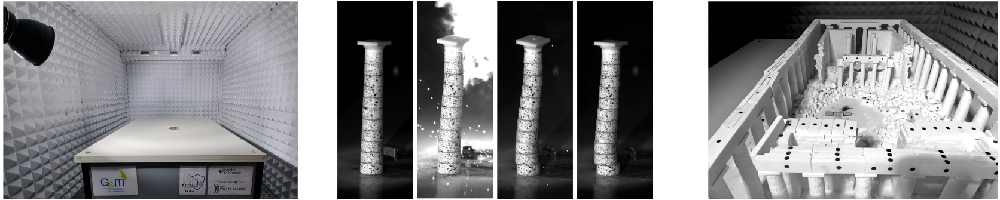

Research
Research
My research lies at the intersection of computational mechanics, constitutive modelling, and scientific machine learning. I develop physics-constrained data-driven methods for complex materials, together with analytical, numerical, and experimental approaches for understanding structural response under extreme dynamic loading.
Thermodynamics-constrained constitutive modelling
I develop machine-learning methods for discovering constitutive equations directly from mechanical observations while enforcing the governing physical principles by construction. The objective is to obtain models that are thermodynamically admissible, interpretable, and reliable under loading paths that were not represented during training.
This research includes Thermodynamics-based Artificial Neural Networks, the autonomous discovery of internal variables and evolution equations, Neural Integration for Constitutive Equations, and the identification of inelastic constitutive models from stress–strain data under hard thermodynamic constraints. These approaches combine learned representations of free energy, material state, and constitutive evolution while enforcing objectivity, stability, and non-negative dissipation.

Data-driven multiscale mechanics
I study heterogeneous materials whose macroscopic behaviour emerges from nonlinear and irreversible mechanisms evolving at finer spatial scales. My research combines micromechanical simulations, computational homogenisation, reduced-order modelling, and thermodynamics-aware machine learning to connect microscopic mechanisms with effective constitutive behaviour.
Learned internal variables provide compact representations of high-dimensional microstructural states, while constitutive surrogates retain the essential effects of path dependence, dissipation, and material heterogeneity. These models are designed for integration into large-scale finite-element simulations while preserving access to relevant microscopic information.

Masonry structures under extreme loading: scaling laws and reduced-scale experiments
A significant part of my research concerns the response and failure of masonry structures, monumental buildings, and free-standing artefacts subjected to explosions and other extreme dynamic actions. Their behaviour involves complex geometry, unilateral contact, friction, cracking, rocking, block separation, impact, and fluid–structure interaction.
I use analytical models, discrete-element methods, nonlinear finite-element simulations, and coupled solid–fluid calculations to identify the mechanisms governing damage and collapse. The broader objective is to develop mechanically informed methods for assessing structural vulnerability and supporting the preservation of cultural heritage.
As part of the doctoral research of A. Morsel, conducted in collaboration with I. Stefanou and P. Kotronis, we developed scaling laws and reduced-scale experiments for reproducing the blast response of masonry and blocky structures. The work investigates how rocking, sliding, uplift, impact, and collapse mechanisms can be represented consistently at laboratory scale. Controlled shock waves, pressure measurements, high-speed imaging, and three-dimensional motion tracking provide detailed observations for validating computational models and relating laboratory measurements to full-scale structural behaviour.
